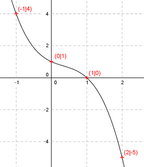

Aufgabe 51 Der Graph einer ganzrationalen Funktion 3. Grades geht durch die Punkte (0|1), (1|0), (-1|4) und (2|-5). Wie lautet seine Funktionsgleichung?  Allgemeine Form einer ganzrationalen Funktion 3. Grades: f(x) = ax3 + bx2 + cx + d f’(x) = 3ax2 + 2bx + c f’’(x) = 6ax + 2b 4 Bedingungen: 1. Geht durch den Punkt (0|1) bedeutet: f(0) = 1 --> a * 03 + b * 02 + c * 0 + d = 1 --> d = 1 2. Geht durch den Punkt (1|0) bedeutet: (d = 1 eingesetzt) f(1) = 0 --> a * 13 + b * 12 + c * 1 + 1 = 0 --> a + b + c + 1 = 0 |-1 --> a + b + c = -1 I 3. Geht durch den Punkt (-1|4) bedeutet: (d = 1 eingesetzt) f(-1) = 4 --> a * (-1)3 + b * (-1)2 + c * (-1) + 1 = 4 --> -a + b - c + 1 = 4 |-1 --> -a + b - c = 3 II 4. Geht durch den Punkt (2|-5) bedeutet: (d = 1 eingesetzt) f(2) = - 5 --> a * 23 + b * 22 + c * 2 + 1 = - 5 --> 8a + 4b + 2c + 1 = - 5 | -1 --> 8a + 4b + 2c = -6 III I + II a + b + c = -1 -a + b - c = 3 ----------------- 2b = 2 |:2 b = 1 II * 2 + III (b = 1 eingesetzt) -2a + 2 - 2c = 6 8a + 4 + 2c = -6 ------------------- 6a + 6 = 0 |-6 6a = -6 |:6 a = -1 a = -1 und b = 1 und d = 1 in I eingesetzt: -1 + 1 + c + 1 = 0 c + 1 = 0 |-1 c = -1 Gesuchte Funktionsgleichung: f(x) = -x3 + x2 - x + 1